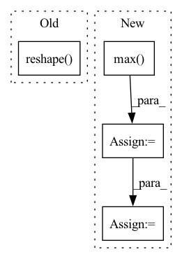

Pattern ID :22567

Before Change
if i > 0:
inp = activate(inp)
inp = jnp.einsum(f"{original_dims},{reduced_dim}z,{reduced_dim}z->{new_dims}", inp, wgt, mask)
return inp.reshape(original_shape)
After Change
original_shape = inp.shape
max_dims = math.floor(math.log(ctx.dims.sequence, ctx.dims.spatial_mixing_kernel))
batch = lax.max(ctx.dims.sequence // ctx.dims.spatial_mixing_kernel ** (depth % max_dims + 1), 1)
mask = jnp.logical_not(jnp.tri(ctx.dims.spatial_mixing_kernel, k=-1)) if ctx.model.autoregressive else 1
out = inp.reshape(ctx.dims.batch * batch, ctx.dims.spatial_mixing_kernel, -1, ctx.dims.features)
out = jnp.einsum("bkrf,kg,kg->bgrf", out, wgt0, mask)
out = activate(ctx, out)
out = jnp.einsum("bkrf,kg,kg->bgrf", out, wgt1, mask)
return out.reshape(original_shape)
In pattern: SUPERPATTERN
Frequency: 3
Non-data size: 4
Instances
Fragment ID: 71283037
Project Name: homebrewnlp/homebrewnlp-jax
Commit Name: acfb8d5fbb1ba8f6b7830832f913663e426b9d09
Time: 2022-09-01
Author: 39779310+ClashLuke@users.noreply.github.com
File Name: src/model/mixer.py
M Class Name: AnonimousClass
N Class Name: AnonimousClass
M Method Name: mix(3)
N Method Name: mix(2)
M Parent Class:
N Parent Class:
M File Name: src/model/mixer.py
N File Name: src/model/mixer.py
M Start Line: 14
M End Line: 32
N Start Line: 13
N End Line: 29
'>
Before Change
recon_loss = (
F.binary_cross_entropy(
recon_x.reshape(recon_x.shape[0], -1),
x.reshape(x.shape[0], -1)
.unsqueeze(1)
.repeat(1, self.n_samples, 1)
.reshape(recon_x.shape[0], -1),
reduction="none",
After Change
log_w = -(recon_loss + KLD)
log_w_minus_max = log_w - log_w.max(1, keepdim=True)[0]
w = log_w_minus_max.exp()
w_tilde = (w / w.sum(axis=1, keepdim=True)).detach()
return (
-(w_tilde * log_w).sum(1).mean(),
'>
Fragment ID: 71283036
Project Name: clementchadebec/benchmark_vae
Commit Name: a1a96c209d3b56f1c72d0409234169cf0b1c1e79
Time: 2022-08-20
Author: 47564971+clementchadebec@users.noreply.github.com
File Name: src/pythae/models/iwae/iwae_model.py
M Class Name: IWAE
N Class Name: IWAE
M Method Name: loss_function(6)
N Method Name: loss_function(6)
M Parent Class: VAE
N Parent Class: VAE
M File Name: src/pythae/models/iwae/iwae_model.py
N File Name: src/pythae/models/iwae/iwae_model.py
M Start Line: 94
M End Line: 131
N Start Line: 97
N End Line: 127
'>
Before Change
overflow = jnp.concatenate([overflow[:, :, 1:], jnp.zeros_like(overflow[:, :, :1])], -1)
top_p_mask = jnp.take_along_axis(overflow, ranks, axis=2)
min_prob_mask = jax.nn.softmax(sorted_out) < wctx.min_prob.reshape(-1, 1, 1)
out_token = out_token + temp + (top_k_mask + top_p_mask) * min_prob_mask * -1e9
out_token = jnp.argmax(out_token, -1)
wctx.data = jnp.where(one_hot(wctx.current_step, wctx.ctx.dims.sequence).reshape(1, -1), out_token, wctx.data)
After Change
// https://github.com/BlinkDL/RWKV-LM/blob/4bbee4bb1a26059c6425d25c59e057891ae7c4c7/README.md
softmax = jax.nn.softmax(out_token)
min_prob_mask = softmax < wctx.max_probability_to_filter.reshape(-1, 1, 1)
adaptive_filter = jnp.max(softmax, axis=2, keepdims=True) ** wctx.adaptive_filter_power * wctx.adaptive_filter_scale
adaptive_mask = softmax > adaptive_filter
out_token = out_token + temp + (top_k_mask + top_p_mask + adaptive_mask) * min_prob_mask * -1e9
out_token = jnp.argmax(out_token, -1)
'>
Fragment ID: 71283034
Project Name: homebrewnlp/homebrewnlp-jax
Commit Name: c9d89273c7ccac5fcc34c1a4952c10ff0affb32b
Time: 2022-05-15
Author: 39779310+ClashLuke@users.noreply.github.com
File Name: inference.py
M Class Name: AnonimousClass
N Class Name: AnonimousClass
M Method Name: body_fn(1)
N Method Name: body_fn(1)
M Parent Class:
N Parent Class:
M File Name: inference.py
N File Name: inference.py
M Start Line: 32
M End Line: 57
N Start Line: 32
N End Line: 63